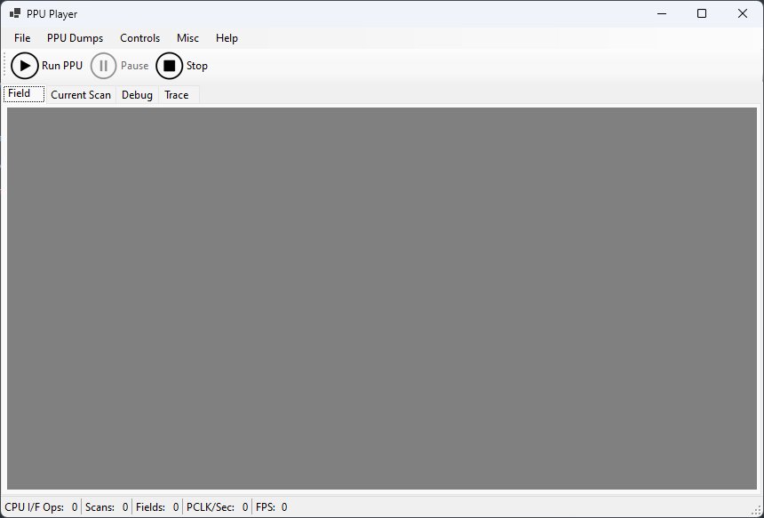
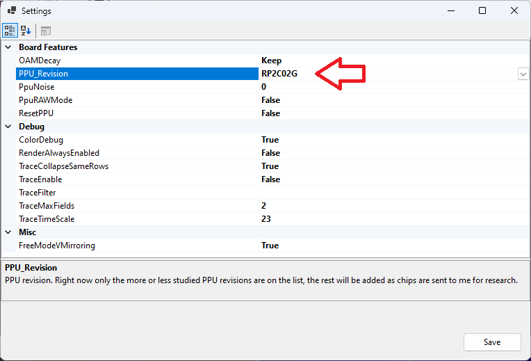
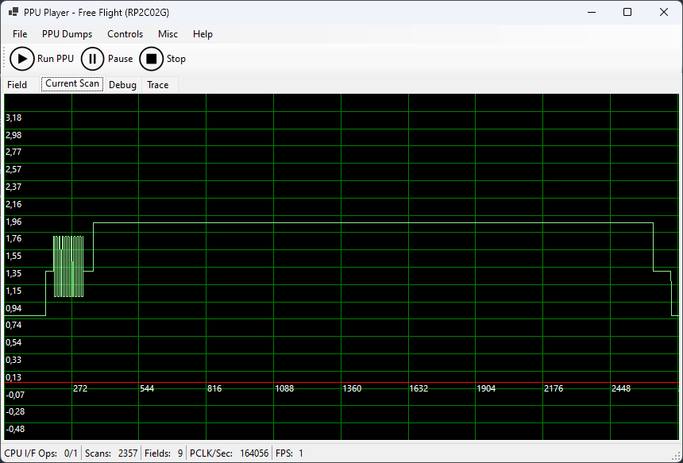
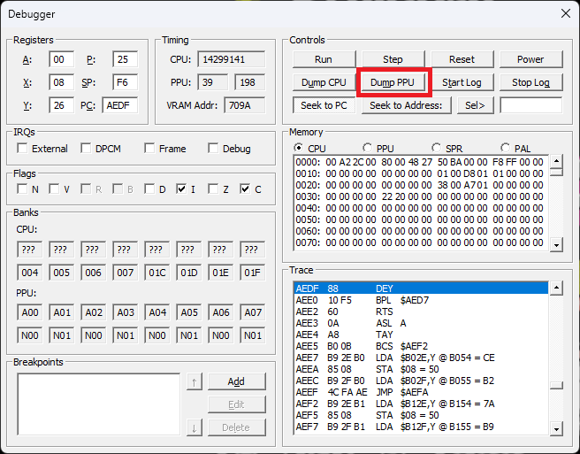
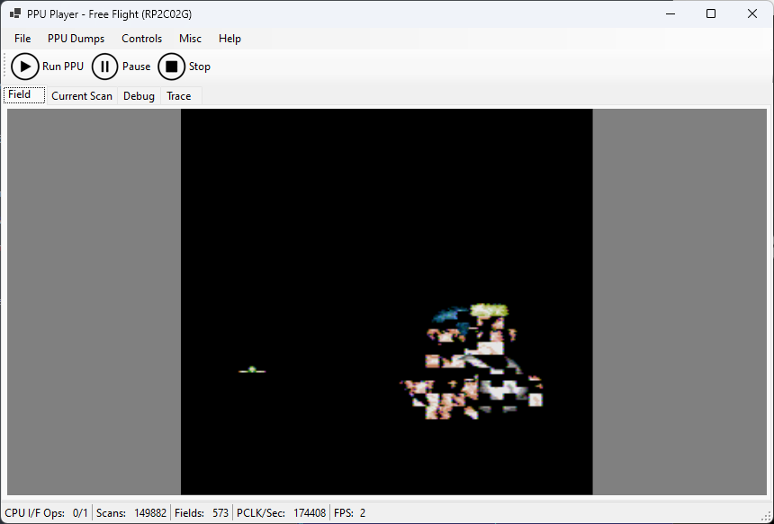
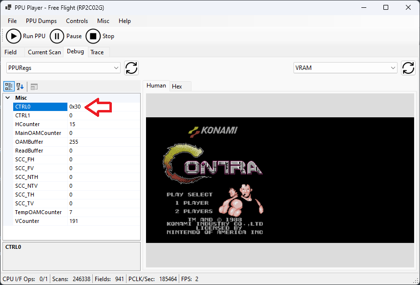
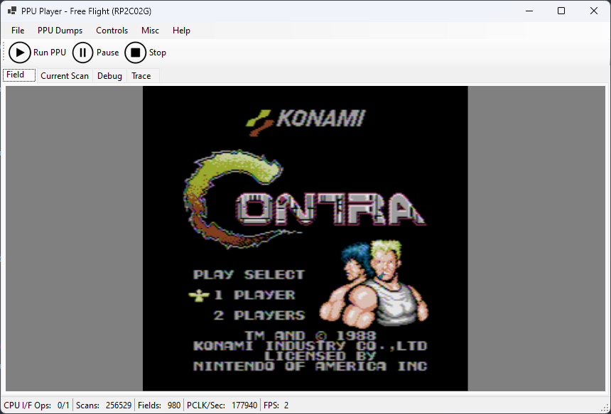
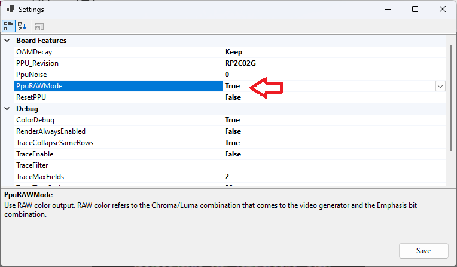

Требования:
- PPUPlayer 2.2+ (релизы)
- Nintendulator (qmtpro.com)
Первый запуск PPUPlayer
Запустить PPUPlayer:

Выбрать в настройках ревизию PPU, для которой нужно получить дамп видеосигнала:

Запустить PPUPlayer в «свободный полёт» (Run PPU). Перейти на вкладку Current Scan и убедиться, что PPU живой:

Дамп состояния PPU в Nintendulator
Запустить какую-нибудь игру в Nintendulator, желательно без сложного маппера.
Открыть отладчик и сдампить всю память PPU:

Получится файл с расширением .ppumem, который можно найти где-то в недрах вашей папки Users/AppData.
Загружаем состояние PPU в PPUPlayer
В меню PPU Dumps выбрать пункт Load Nintendulator PPU Dump и загрузить полученный в Nintendulator дамп памяти PPU.
Получится примерно такое:

Но упс. Что-то не так.
Дело в том, что Nintendulator сохраняет только память PPU, но не сохраняет текущие значения регистров $2000 и $2001.
Особенно важен регистр $2000, в котором задаются адреса pattern table и размер спрайтов.
Чтобы это исправить, переходим на вкладку Debug и меняем значение регистра $2000 (для Contra нужно установить значение 0x30):

Получилось такое:

Включить дамп видеосигнала
Осталось за малым.
В меню PPU Dumps нужно выбрать пункт Start video signal dump, указать файл — и после этого автоматически начнётся дамп в файл видеовыхода микросхемы PPU.
- Для «композитных» PPU (2C02/2C07) производится дамп массива
float— каждое значение представляет собой напряжение (уровень сигнала). - Для RGB PPU дампится 4 байта (в очерёдности R, G, B, SYNC), которые соответствуют выходам RGB PPU.
RAW-дамп
Есть возможность вместо видеосигнала PPU получать значение пикселей до схемы ЦАП:

В этом случае будут дампиться значения uint16_t следующего формата:
/// <summary>
/// Raw PPU color, which is obtained from the PPU circuits BEFORE the video signal generator.
/// The user can switch the PPUSim video output to use "raw" color, instead of the original (Composite/RGB).
/// </summary>
union RAWOut
{
struct
{
unsigned CC0 : 1; // Chroma (CB[0-3])
unsigned CC1 : 1;
unsigned CC2 : 1;
unsigned CC3 : 1;
unsigned LL0 : 1; // Luma (CB[4-5])
unsigned LL1 : 1;
unsigned TR : 1; // "Tint Red", $2001[5]
unsigned TG : 1; // "Tint Green", $2001[6]
unsigned TB : 1; // "Tint Blue", $2001[7]
unsigned Sync : 1; // 1: Sync level
};
uint16_t raw;
} RAW;Заключение
PPUPlayer стал мощным инструментом в изучении PPU. Внутри него живёт настоящий живой PPU.
Не стесняйтесь тыкать разные кнопочки в PPUPlayer и экспериментировать. Если что — имеется также презентация.
Источник: Wiki/DumpVideoSignalRus.md · по теме: Инструменты, PPUSim